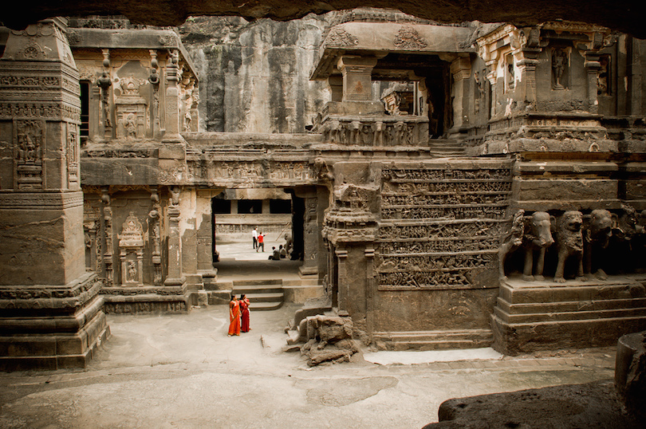

India is the world’s seventh-largest country stretching from the high mountains of the Himalayas to the tropical greenery of Kerala, and from the sacred Ganges to the sands of the Thar desert. Its more than one billion inhabitants are divided into two thousand ethnic groups and speak over 200 different languages.
Conform its size and population, India has an almost endless variety of cultures, landscapes, monuments and places to explore. From the ancient ruins, fascinating religious structures, exotic cities and diverse landscape there is an endless collection of tourist attractions in India that will never cease to awe and fascinate the visitor.
-
1.Taj Mahal
The Taj Mahal in Agra is an immense mausoleum of white marble, built between 1632 and 1653 by order of the Mughal emperor Shah Jahan in memory of his favorite wife. Called “a teardrop on the cheek of eternity” it is one of the masterpieces of Mughal architecture, and one of the great tourist attractions in India. Besides the white domed marble mausoleum the Taj Mahal includes several other beautiful buildings, reflecting pools, and extensive ornamental gardens with flowering trees and bushes.
-
2.Varanasi

Situated on the banks of the River Ganges, Varanasi is sacred to Hindus, Buddhists and Jains and also one of the oldest continuously inhabited cities in the world. In many ways Varanasi epitomizes the very best and worst aspects of India, and it can be a little overwhelming. The scene of pilgrims doing their devotions in the River Ganges at sunrise set against the backdrop of the centuries old temples is probably one of the most impressive sights in the world.
-
3.Ellora Caves

Cave art is taken to new heights at Ellora Caves, one of the largest monastery-temple cave complexes in the world cut from rock. Ellora has 100 caves, though only 34 are open to the public. The largest single monolithic rock excavation is found at the Kailasa Temple, which covers an area double the size of Parthenon in Athens Constructed between the seventh and ninth centuries, the caves are devoted to Hindu, Budhist and Jainism deities.
-
4.Jaisalmer
Located in Rajasthan’s remote westernmost corner close to the border with Pakistan, Jaisalmer is the quintessential desert town. The yellow sandstone walls of the “Golden City” rise from the Thar desert like a scene from the Arabian Nights while the Jaisalmer Fort crowns the city. Uncontrolled commercialism has dampened the romantic vision of Jaisalmer, but even with all the touts and tour buses, it remains one of the most popular tourist attractions in India.
-
5.Harmandir Sahab

The Harmandir Sahib, better known as the Golden Temple is the main tourist attraction in Amritsar, and the most important religious place to the Sikhs. Construction of the temple was begun by Guru Ramdas ji. in the 16th century. In the 19th century, Maharaja Ranjit Singh the upper floors of the temple were covered with gold. It’s a stunning temple, and always full of thousands of pilgrims from all over India, excited to be at a place that they usually only see on television.
-
6.Paloleum
Palolem is the most southerly of Goa’s developed beaches and also one of the most beautiful. It is a natural bay surrounded by lofty headlands on either sides, resulting in a calm, idyllic sea with a gently sloping bed. For those who believe a beach cannot be paradise without a decent selection of cheap restaurants and good hotels, a dose of nightlife and plenty of like-minded people Palolem is the place to be.
-
7.Jim Corbett National Park
Everyone loves to see animals in the wild. Jim Corbett National Park, India’s oldest national park, is a good place to see the endangered Bengal tiger. Established in 1936, the park was renamed in 1954 to honor Jim Corbett, author and wildlife conservationist, who helped create this nature reserve. Thick vegetation, including jungles and forest, make it difficult to see the tiger – April to June is best for that, but visitors may see other wildlife, including elephants, leopards, rhinoceros and Himalayan black bears.
-
8.Darjeeling
Darjeeling is a town in northeast India that is famous for tea, trains and scenic beauty. Darjeeling tea is thin, light colored, aromatic and soothing to drink. The leaves are grown in the hills around the town. Farther up in the skyline, travelers can see the snow-covered peaks of the Himalayan foothills. Access is by a three-hour car ride from the nearest airport or a seven-hour journey on the Darjeeling Himalayan Railroad, a narrow gauge railway known as the “toy train.”
-
9.Hawa Mahal

A stunning pick and red sandstone five-story structure stands in the heart of Jaipur. One of the city’s most popular tourist attractions, the Hawa Mahal has a unique purpose. Also known as the Palace of the Wind, it was a place where royal women could view street activities outside while hidden from view. To this end, the pyramid-shaped palace has 953 windows, each with an intricate design. Constructed in 1799, Hawa Mahal is considered an excellent example of Rajputana architecture.
-
10.Havelock Islands

Ecotourism is encouraged at Havelock Island, the largest island in Ritchie’s Archipelago in the Andaman Islands. Though not as crowded as other islands in Asia, the number of visitors to Havelock Island is on the rise due to its great beaches, casual atmosphere, snorkeling and scuba diving opportunities. The best time to visit is mid-January to mid-May, when the weather is sunny with calmer seas. Redhanagar Beach is considered one of the best beaches in Asia.
-
11.Mysore Palace

Visitors to Mysore Palace are in for an awesome experience at sthe second most popular tourist attraction in India. The seven palaces that make up the Mysore Palace complex are nothing short of spectacular. The Wodeyars ruled Mysore from 1399 to 1950. Their original palace was built in 1399, and the current palace was completed in 1912. The new palace is an amalgamation of Muslim, Hindu, Gothic and Raiput styles. Three stories high, it has deep pink marble domes and an ivory tower. The palace hosts an annual arts and culture festival, Dashara annually.
-
12.Dharamshala
Dharamsala is the home away from home for the Dalai Lama who came here in 1959 after escaping from Tibet. The city also is the home to the Tibetan government in exile. Dharamsala means a spiritual dwelling or place for pilgrims to rest, which is appropriate since so many Tibetans live here. With advance planning, it may be possible to attend one of the Dalai Lamas public teaching sessions. Dharamsala is popular with hiking enthusiasts and travelers interested in yoga and Indian cooking lessons.
-
13.Ajanta Caves
The Ajanta Caves are rock-cut cave monuments dating from the 2th century BC. The magnificent Ajanta caves were abandoned around 650 AD and forgotten until 1819, when a British hunting party stumbled upon them. Their isolation contributed to the fine state of preservation in which some of their paintings remain to this day. The well preserved murals depict everything from battlefields to sailing ships, city streets and teeming animal-filled forests to snow-capped mountains. The city of Aurangabad is the gateway to the Ajanta Caves as well as the equally spectacular Ellora Caves.
-
14.Kerala Backwaters

The Kerala backwaters are a chain of lagoons and lakes lying parallel to the Arabian Sea coast in the Kerala state. The Kerala backwaters are home to many unique species of aquatic life including crabs, frogs and mudskippers, water birds and animals such as otters and turtles. Today, houseboat tourism is the most popular tourist activity in the backwaters, with several large Kettuvallams (traditional rice boats, now converted into floating hotels)ply the waterways.
-
15.Khajuraho

The Khajuraho group of temples combines art with eroticism, with the end result being some of the finest medieval temple art, not only in India, but the world. Built around the 10th century, only about 25 of the original 85 temples remain today. The largest group of Hindu and Jain temples in the world, the carvings and sculptures represent women’s traditional lifestyles in medieval times. The sculptures were created at a time, when erotic art was auspicious; some of the carvings are sexually explicit
Tours and Travels is the leading Tour and Travel service provider located at Paharganj, Delhi offering a broad spectrum of services that include flights booking, reservation and our foremost priority are the packages provided by our company namely India Tour Packages and Rajasthan Tour Packages. We have a vast classification of different packages.
Our company emerged as one of the most popular Tour and Travels Companies in Delhi and trusted travel partners in the country by thousands of clients in proving experience from industry perfectionist. We have professionals who have personally tried and tested all services to ensure that clients feel safe, secure and satisfied whenever they opt to travel. We also provide Customized Travel Solution so that our client can plan as per their choice, their requirement, and their budget. We don’t want our customer to feel like they are trapped or limited to packages. They don’t need to stick to the packages as we provide. The packages mentioning on our website are just examples or best tour packages recommendation. You can customize it how so ever you want it. We are also known for the best travel agents in Delhi and we are one of the reputed travel agencies in Delhi